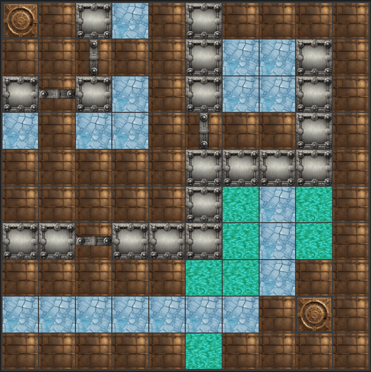

<div class="create-game-component">
    <div class="header">
        <div class="return-to-previous-page">
            <button class="return-button" (click)="onReturn()">Retour</button>
        </div>
        <h2>CHOISIS TON JEU</h2>
    </div>

    <div class="map-view">
        <div class="scrollable-container">
            <div class="map-cards">
                @for(map of this.maps; track map.name) {
                <div class="map-card" [ngClass]="{ selected: selectedMap === map._id }" (click)="selectMap(map._id)">
                    
                    <div class="map-details">
                        <!-- <p class="description">Description: {{map.description}} </p> -->
                        <!-- <p class="mode">Game Mode: {{map.mode}} </p> -->
                        <p class="description">description de la map</p>
                        <p class="mode">Mode de jeu</p>
                        <h2 class="name">{{ map.name }}</h2>
                    </div>
                </div>
                }
            </div>
        </div>
    </div>
    <div class="footer">
        <button class="next-button" (click)="next()">Suivant</button>
        @if (showErrorMessage.selectionError) {
        <div class="error-message">Error : The selected game is no longer available. Please select a new game.</div>
        } @if (showErrorMessage.userError) {
        <div class="error-message">Error : No game was selected. Please select a game.</div>
        }
    </div>
</div>
